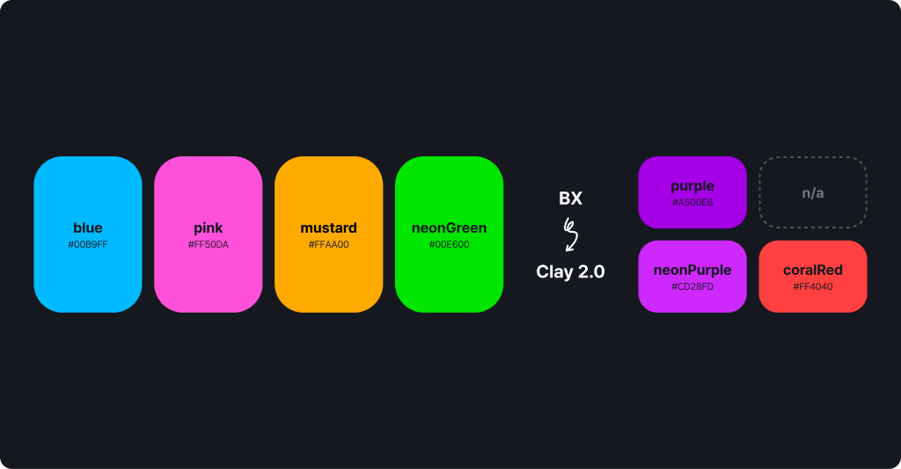
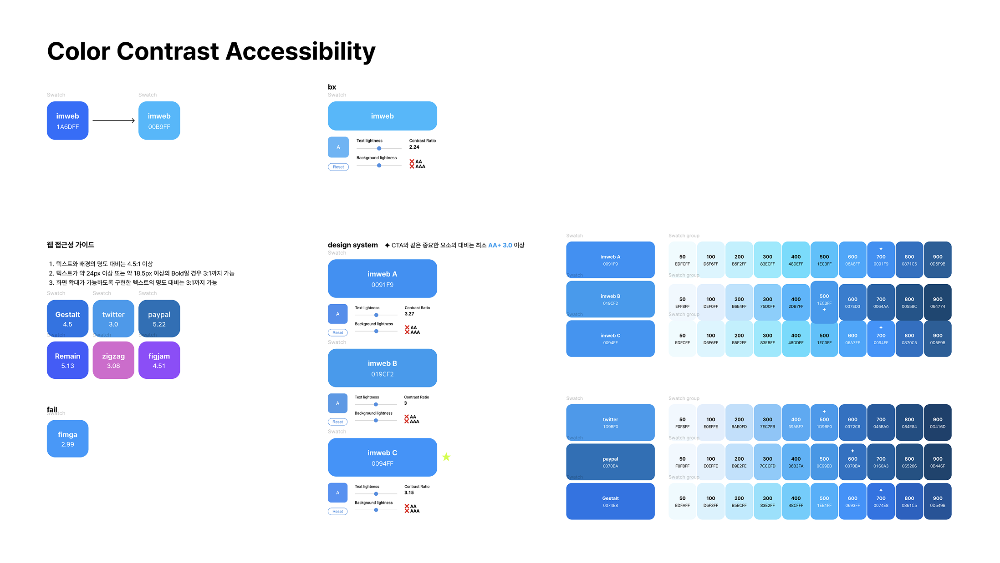
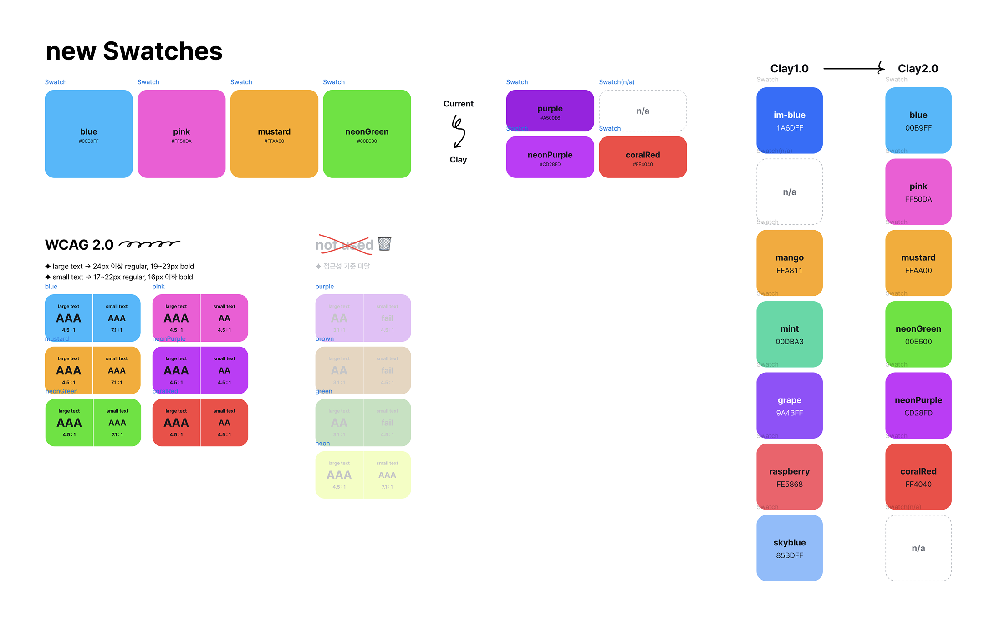
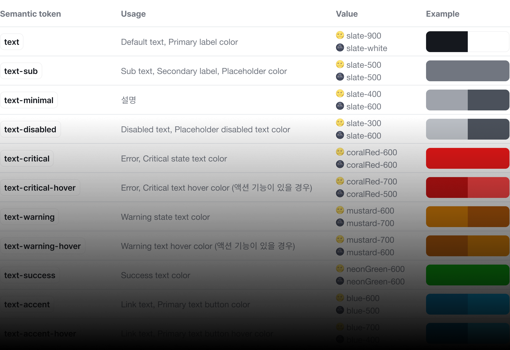
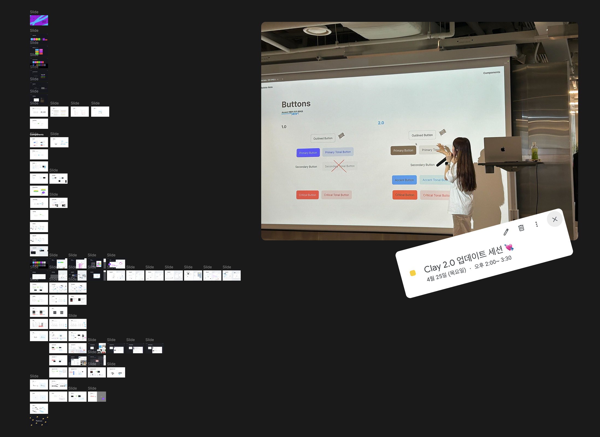
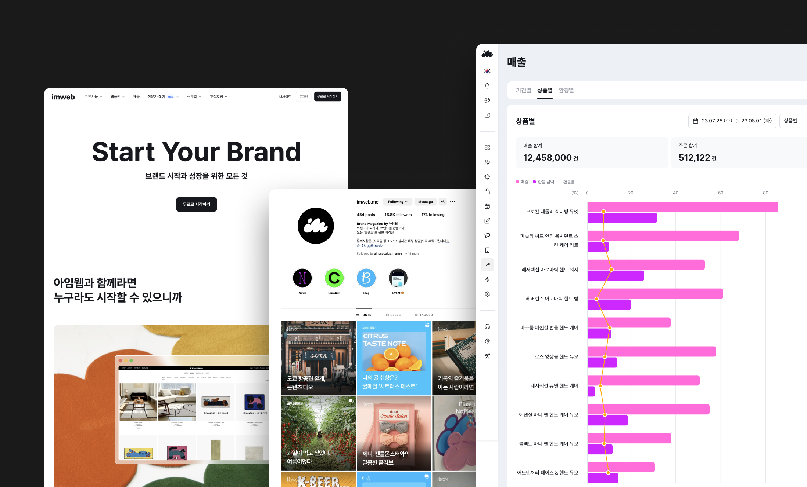

Overview 개요
imweb이 리브랜딩 되면서 브랜드와 제품의 시각적 일관성과 통일된 브랜드 아이덴티티를 위해 디자인 시스템의 컬러 팔레트와 토큰 구조를 재정비하고 개선합니다. 또한 개발과 디자인 언어의 간극을 최소화 하고 명확한 커뮤니케이션을 도와 작업 효율과 높은 사용성을 보장합니다.
Collaborators 협업
Front-end engineer(1)
Goals 목표
Design Process 디자인 프로세스
1.0 컬러
시스템 분석
목표 설정
새로운 컬러
팔레트 개발
컴포넌트
적용
토큰
업데이트
2.0 배포
및 적용
Testing, feedback and iteration
Research 연구
1.0에서 Primary였던 im-Blue를 대체할 새로운 블루 컬러의 웹 접근성 가이드를 충족하기 위해 다양한 브랜드의 블루 컬러에 대한 명도 대비를 테스트 했습니다. 연구가 진행되는 동안 imweb을 대표하는 컬러가 Blue여야 하는지에 대한 고민을 하게 되었고, 다양성을 존중하는 브랜드 원칙에 따라 Slate를 Primary, Blue에는 Accent 의 역할을 주기로 했습니다.

Define the Main
Color Palette 주요 컬러 팔레트 정의
브랜드로서 imweb을 표현할 수 있는 컬러는 다양합니다. 이중에 제품에 적당한 다섯가지 컬러를 선별했고, Purple은 조금 더 제품에 적합할 수 있도록 보완된 neonPurple 그리고 Critical 상태를 표현해 줄 coralRed를 추가했습니다. 1.0의 대부분의 컬러는 2.0 컬러로 대치됩니다. im-blue와 비슷한 블루 계열이었던 skyBlue는 없애고 포인트나 차트 컬러로 활용할 수 있는 Pink를 추가했습니다.

slate 는 무채색 색상으로 일반적인 상황에서 버튼(CTA)이나 포인트 및 액션 컴포넌트와 같은 UI 전반의 구성 요소의 색상으로 사용합니다. 회색 음영의 배경(Background), 선(Border) 및 그림자(Shadow) 등 컴포넌트의 계층을 구분하는데서도 사용됩니다.
blue 는 구성요소를 눈에 띄게 하거나 사용자의 관심을 집중시키고자 할 때 사용됩니다. 즉각적인 조치가 필요하지 않은 중요한 요소를 나타내기도 합니다. 주의가 필요한 새로운 정보(Informative) 및 배지에 사용합니다.
neonGreen 은 성공(Success) 상태를 나타냅니다.
mustard 는 주의가 필요함(Attention Required)을 나타냅니다. 경고, 보류, 누락 또는 진행 방해 상태를 전달합니다.
coralRed 는 문제(Problem)를 나타냅니다. 위험, 오류, 실패, 삭제, 중지 또는 거부 상태를 전달합니다.
neonPurple · pink 는 의미를 지정하지 않고, 브랜드의 친근함을 전달하기 위해 제품 내 일러스트나 회사 관련 공지사항 등에 활용됩니다.
Text
텍스트 위계에 따라 Text, Text-sub를 기본으로 사용하며 각 화면 구성 요소에 따라 이외(Accent, Warning, Critical)의 컬러를 사용합니다. 아이콘과 함께 사용될 경우 색상 토큰을 공유합니다.

Workshops and
Training Sessions 업데이트 세션
파운데이션 영역의 수정으로 약 80% 이상의 구성 요소에 영향을 미쳤습니다. 약 90분의 업데이트 세션을 통해 프로젝트 배경과 자세한 업데이트 내용을 설명하고, 디자이너와 엔지니어가 주의해야할 부분을 안내했습니다.

Results and
Achievements 결과 및 성과
Clay 2.0 프로젝트에서는 브랜드의 시각적 일관성을 강화하고 imweb 제품 전반에서 일관된 사용자 경험을 통해 브랜드 인지도와 신뢰도를 높였습니다. 색상의 대비와 조화를 고려한 접근성 향상으로 더 나은 사용 경험을 제공하는데 기여 했으며, 토큰 구조 개편으로 디자이너와 개발자 간의 원활한 커뮤니케이션과 작업 시간을 절약했습니다. 리뉴얼 이후 사용자와 내부 팀으로부터 긍정적인 피드백을 받았으며, 지속적인 모니터링과 피드백을 통해 최적화 작업을 진행하고 있습니다.
